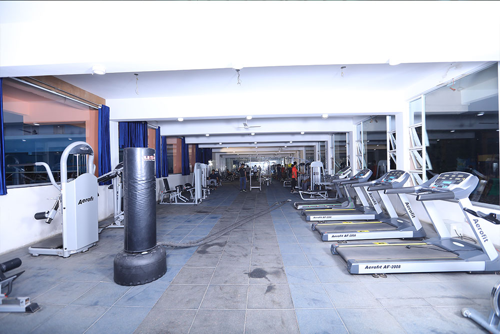
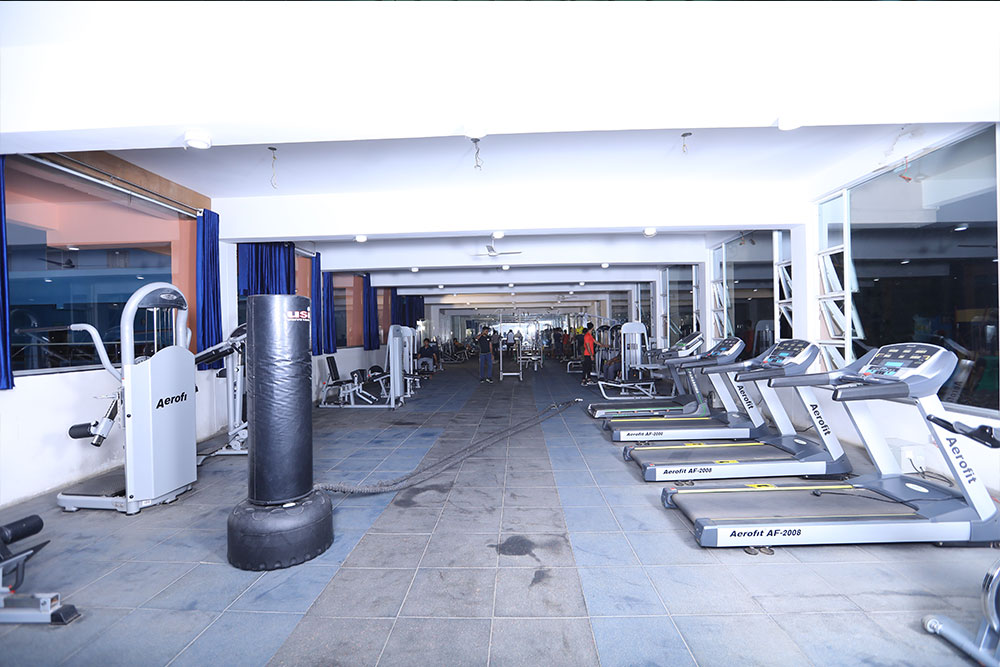

About College Sports Hub
MLRIT college is founded in 2005, since the inception college has been actively involved in sports and has been undisputed champions in games like Volleyball, Badminton, Kabaddi, Basketball and cricket.
MLR Institute of Technology is known for its integrated curriculum with equal importance to academics, employable skills & sports. MLR Institute of Technology (MLRIT) is located at Dundigal, Hyderabad, Telangana, India. The institution was started in 2005 by the KMR Education Trust, headed by Mr. Marri Laxman Reddy. The Institute has Nine UG courses along with Five PG Courses. The Institute is affiliated with Jawaharlal Nehru Technological University, Hyderabad (JNTUH). It was granted Autonomous status by University Grants Commission (India) in the year 2015.
Sports play an important role in shaping up the personality and fitness of a person and to give a truly global experience to all the students of MLRIT.
Sports environments matching global standards are provided at the college.
 College has a World class Indoor Stadium built up in an area of more than 26000 sqft with 2 floors both the sides with a beautiful gallery & stadium can accommodate a seating capacity of 1000 people, and equipped with 10 Badminton Courts and Table Tennis Hall which accommodates 20 TT tables.
College has a World class Indoor Stadium built up in an area of more than 26000 sqft with 2 floors both the sides with a beautiful gallery & stadium can accommodate a seating capacity of 1000 people, and equipped with 10 Badminton Courts and Table Tennis Hall which accommodates 20 TT tables.

 Indoor stadium also has a Gym with latest updated and world class Gym equipment's.

This stadium has a vast hall which not only accommodates 4 Snooker Tables but also it can accommodate a space of more than 6 carom Boards. This stadium has a space even for squash court. At 2nd floor a massive hall which is dedicated to the sport fencing where champions are made.
Indoor stadium also has a space for Zumba hall and a Meditation hall.
The best part of the stadium is that it can also provide accommodation with 32 rooms.
College has a outdoor games facility with games like, Volley ball (2 courts) , Throwball (1 court) , Basketball (1 court) Kabaddi 2 (Courts) Kho kho field, Football field, Athletic Track.
MLRIT College also has a Cricket Ground with world class facilities; This ground is equipped with 4 Flood lights which provides a wonderful lighting capacity of 77 Thousand watts to play a Night match also.
Indoor stadium also has a Gym with latest updated and world class Gym equipment's.

This stadium has a vast hall which not only accommodates 4 Snooker Tables but also it can accommodate a space of more than 6 carom Boards. This stadium has a space even for squash court. At 2nd floor a massive hall which is dedicated to the sport fencing where champions are made.
Indoor stadium also has a space for Zumba hall and a Meditation hall.
The best part of the stadium is that it can also provide accommodation with 32 rooms.
College has a outdoor games facility with games like, Volley ball (2 courts) , Throwball (1 court) , Basketball (1 court) Kabaddi 2 (Courts) Kho kho field, Football field, Athletic Track.
MLRIT College also has a Cricket Ground with world class facilities; This ground is equipped with 4 Flood lights which provides a wonderful lighting capacity of 77 Thousand watts to play a Night match also.

Our platform provides students with a seamless system to book sports equipment and reserve college sports areas. We aim to make sports more accessible and organized for everyone.